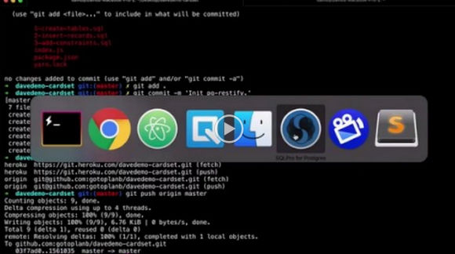

Deploying the API
2017-01-18
tl;dr
Heroku provides easy code deployments.

Transcript
- New Pipeline
- Same name as your app
- connect to github
- search for your repo and connect
- Click into production stage
- Click deploy tab
- Enable automatic deployments from master
- First attempt to deploy to production stage
- git status and confirm .env is not listed
- git add, commit, push
heroku ps OR heroku ps:scale web=1- Wait for deployment success, try to curl, and be sad. What happened?
- Add Papertrail to troublshoot
heroku addons:create papertrail:choklad- Create Procfile with contents web: node index.js since we likely will need in the future
- Git add, commit, push
- Wait for deployment again, and see it still doesn’t work.
- Look at Resources > Papertrail and note problem binding do port
- Update index.js to bind to port 5000
- var port = process.env.PORT || 8080;
- console.log(
REST server listening on ${port});
- server.listen(port);`
- Confirm heroku local still works and you see port 5000 message
- Git add, commit, push
- GET /api/generic/card to confirm it worked
- Look in Papertrail to see API request success
Next post in this series
Configuring a Delivery pipeline